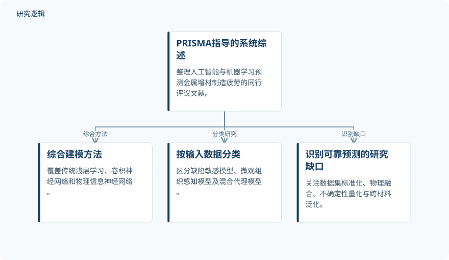

摘要解读
金属增材制造疲劳性能预测的人工智能技术：系统综述
Artificial Intelligence Techniques for Fatigue Performance Prediction in Metal Additive Manufacturing: A Systematic Review
解读更新 2026-10-17 14:51 · 依据公开摘要整理，未核验全文细节
金属增材制造能实现复杂轻量化构件，但疲劳性能有限且波动，仍制约其承载应用。这篇系统综述梳理人工智能如何预测疲劳寿命、强度与裂纹扩展，阅读价值在于理解模型依赖什么数据，以及可靠预测还面临哪些障碍。
文章目录
复杂构件的制造优势，遇上疲劳性能波动
金属增材制造为航空航天、汽车和能源领域提供了轻量化、拓扑优化及功能梯度构件的制造可能。然而，制造出复杂形状并不意味着疲劳性能自然可靠：孔隙、未熔合等工艺诱发缺陷，以及微观组织各向异性、表面状态和后处理，都会影响疲劳表现。
这也是人工智能与机器学习受到关注的背景。相关建模试图连接复杂的“工艺—组织—性能—服役表现”关系，预测对象不仅包括疲劳寿命，也包括疲劳强度和裂纹扩展。
按模型类型与输入数据整理既有研究
作者开展了遵循PRISMA指导的系统综述，整理将人工智能与机器学习用于金属增材制造疲劳预测的同行评议文献。综述覆盖支持向量机、随机森林、XGBoost等传统“浅层”学习方法，也纳入卷积神经网络和物理信息神经网络。
另一条整理线索是输入数据：包括使用XCT或SEM数据的缺陷敏感模型、利用晶体学特征的微观组织感知模型，以及整合工艺、组织与性能信息的混合代理模型。摘要还将迁移学习、合成数据增强和交叉验证列为应对数据稀缺的相关策略。
依据摘要整理的系统综述框架


仅概括摘要明确陈述的文献整理维度与研究缺口，不表示论文原图或具体实验流程。
下载 SVG图示关系说明
实线表示相邻阶段的信息流，虚线表示跨阶段联系或反馈。
PRISMA指导的系统综述 → 综合建模方法：综合方法；PRISMA指导的系统综述 → 按输入数据分类：分类研究；PRISMA指导的系统综述 → 识别可靠预测的研究缺口：识别缺口
综述指出的关键缺口，不只是算法选择
摘要报告的主要认识，是该领域仍存在数据集标准化、物理融合、不确定性量化和跨材料泛化方面的研究缺口。这些问题说明，作者关注的不只是模型形式，还包括数据能否一致组织、预测能否体现物理依据，以及模型能否迁移到不同材料。
综述进一步提出，应发展具有物理基础、可解释性和泛化能力的人工智能框架，以面向不同增材制造材料与平台开展可靠疲劳预测。这是作者提出的发展方向，不是摘要已经证明实现的效果。
摘要尚不足以判断预测精度与验证边界
本解读仅依据完整摘要。摘要未给出纳入文献数量、检索与筛选细节，也未列出各研究的样本规模、材料和工艺覆盖范围，因此无法据此判断综述覆盖程度或具体模型的数据基础。
摘要也未报告统一的模型比较结果、误差指标及外部验证范围，不能据此认定深度学习优于传统模型，或认定某类方法已具备跨材料可靠性。这些属于当前资料无法判断的内容，不代表论文没有讨论。
阅读启发：先看数据与验证，再看模型名称
阅读启发：进一步阅读时，可围绕摘要指出的缺口追问：不同研究的数据是否可比，物理信息如何进入模型，不确定性如何表达，跨材料泛化又由什么验证支持。对关注结构疲劳与可靠性的读者，这些问题比单看算法名称更有助于理解预测结果的适用边界。
以上为本站阅读启发与建议，不是论文已验证的结论。